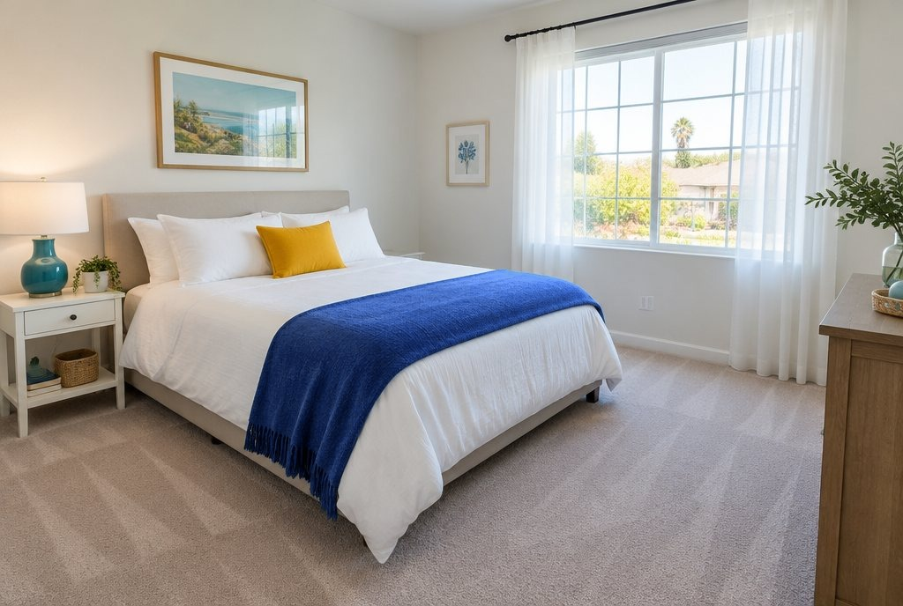
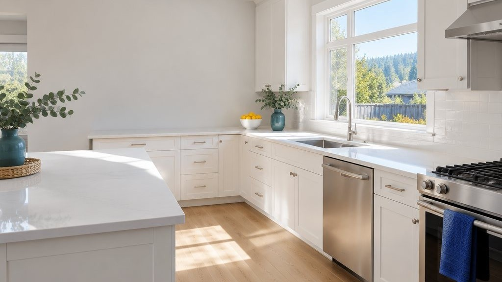

Home Blog
BlogCleaning tips, app tips and news
Plain advice on keeping a home clean and hiring the right help, how to get the most from the Bay Area Shine app, and news about our launch.
News and updates

Using the app

Cleaning tips
 Cleaning tipsHow to hire a house cleaner: 10 things to check firstPrice, checklist, supplies, the fine print, keys and reviews: what to ask before you let anyone in, and the red flags to walk away from.Read · 5 min →
Cleaning tipsHow to hire a house cleaner: 10 things to check firstPrice, checklist, supplies, the fine print, keys and reviews: what to ask before you let anyone in, and the red flags to walk away from.Read · 5 min → Cleaning tipsDeep clean vs. regular clean: what's the difference?Both leave your home clean. A deep clean goes further. What each covers, when you need which, and what each costs.Read · 3 min →
Cleaning tipsDeep clean vs. regular clean: what's the difference?Both leave your home clean. A deep clean goes further. What each covers, when you need which, and what each costs.Read · 3 min → Cleaning tipsMove-out cleaning checklist: room by roomKitchen, bathrooms, bedrooms and floors, plus the spots people forget. A room-by-room list for handing back the keys.Read · 2 min →
Cleaning tipsMove-out cleaning checklist: room by roomKitchen, bathrooms, bedrooms and floors, plus the spots people forget. A room-by-room list for handing back the keys.Read · 2 min →
Cleaning tipsHow often should you have your home cleaned?Weekly, every two weeks or monthly? How to pick a schedule that fits your home, your people and your budget.Read · 2 min → Cleaning tipsHow to get your home ready for a house cleanerYou don't need to clean before the cleaner comes. A few minutes of prep just means more of their time goes into cleaning.Read · 2 min →
Cleaning tipsHow to get your home ready for a house cleanerYou don't need to clean before the cleaner comes. A few minutes of prep just means more of their time goes into cleaning.Read · 2 min →
Cleaning tipsHow much does house cleaning cost?Home size, the type of clean, extras and how often you book: what sets the price, with our full price list.Read · 2 min → Cleaning tipsShould you tip your house cleaner?Tipping is a thank-you, not a rule. When people tip, how to choose an amount, and how tips work with us.Read · 2 min →
Cleaning tipsShould you tip your house cleaner?Tipping is a thank-you, not a rule. When people tip, how to choose an amount, and how tips work with us.Read · 2 min →- Cleaning tipsAirbnb turnover cleaning checklist for hostsA turnover is a reset, not just a clean. Linens, kitchen, bathrooms, restocking and the checks before the next guest arrives.Read · 2 min →